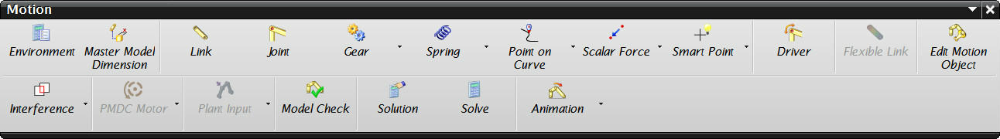

UG运动仿真学习记录¶
发布于：2013-06-13 | 分类：CAD/CAE integration
UG运动仿真的学习兴趣由来已久，并且资料也收集了一些；但迟迟限于资料收集的状态，始终没有开始学习。直到最近实验需要，终于用了一天时间对《UG NX 7.0 动力学与有限元分析从入门到精通》一书进行了快速学习，并结合随书视频简要练习，算是到了入门阶段。
工具栏概览¶

运动设置¶
机构指两个或两个以上的构件通过活动联接以实现规定运动的构件组合，因此最基本的机构运动分析需要定义 构件、联接关系，对于一些特定的、复杂的运动还要通过 约束条件 来实现。
-
构件（Link）独立的运动单位，可以包含多个部件，机架设定为固定。 -
运动副（Joint）最基本的联接方式，包括旋转副、滑动副、平面副、圆柱副、球副、万向节等。可以设定基础构件，则相对其运动。 -
传动副（Gear）主要包括齿轮、齿轮齿条、带传动等。传动副是运动副的组合，同时附带传动比。例如齿轮组合两个旋转副，则涡轮蜗杆也属于齿轮传动副；齿轮齿条组合旋转副和滑动副，凸轮传动也属于此类；带传动组合两个滑动副。
-
连接（Spring）包括弹簧、阻尼、衬套、三维接触、二维接触。运动副、传动副、连接同属于联接关系。
-
约束（Point on Curve）包括点在线上、线在线上、点在面上三种约束条件。 -
载荷（Scalar Force）包括标量/矢量力，标量/矢量扭矩。标量力定义两个参考点作为力的方向，则可能始终变化；矢量力明确给定方向及大小。
-
干涉（Interference）设定干涉条件，配合求解中“在发生干涉时停止”选项可以用于机构运动合理性的检测。
提示
约束、载荷、干涉同属于联接关系。
求解¶
对求解工况（Solution）的设置中注意三种驱动方式：
正常运行由运动副或者载荷驱动，需要设置运行的时间及步数，即运动行程有限。关节运动设定单步运动量及步数，可以任意行程运动，常配合“在发生干涉时停止”选项检测运动范围。表单驱动由Excel中时间、行程数据驱动。
提示
重力始终存在，大小可调。
后处理¶
后处理（Animation）可以创建动画、曲线图（位移-时间，力-时间）等。
总结¶
- UG运动仿真的基本设置流程为：定义构件及联接关系，设置约束条件，最终进行求解和后处理分析。
- 软件设置是在理解了机构运动的基础上进行的，所以Motion Simulation的设置只是形式，关键在于对机构运动的理解。